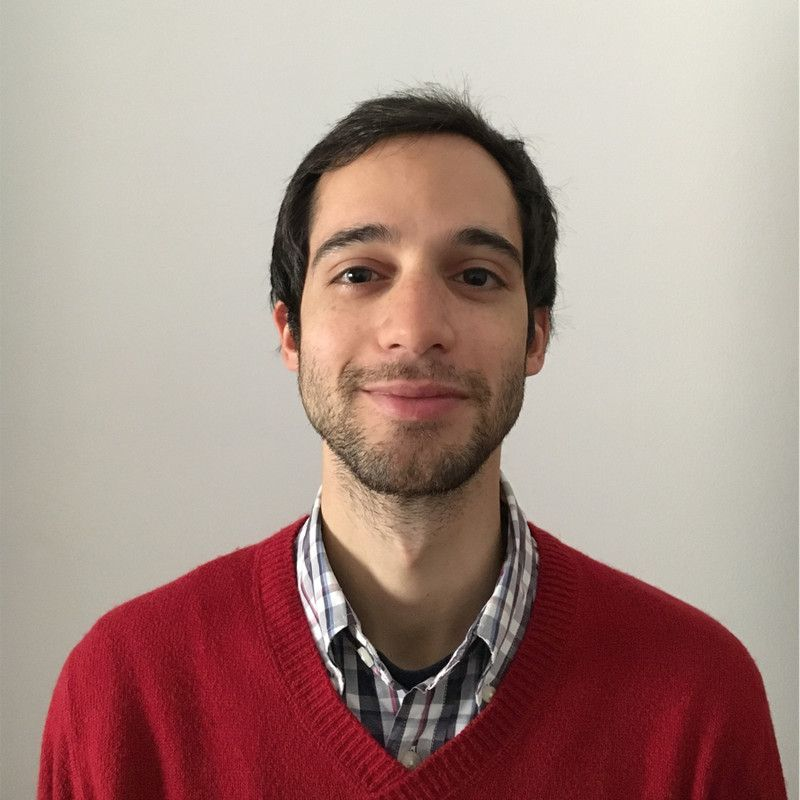

Chat with Afonso's AI assistant
AFONSOTEODORO.
AI ENGINEER · PhD ELECTRICAL & COMPUTER ENGINEERING, IST LISBON · PORTUGAL
Since 2019 I've shipped production ML for insurance operations: document understanding at ~150k invoices a month, with 70%+ of reimbursements settled without human review. I also build my own AI products, from Intrinsic to Nomly.
Open to senior, lead and founding AI roles Remote, Lisbon or relocation

- ROLE
- AI Engineer / Consultant
- CURRENT
- Nimble Portal, since 2019
- FOCUS
- CV · NLP · LLM systems
- AWARD
- IBM Scientific Prize 2019
- RESEARCH
- 400+ citations
Selected Projects
Work History
Published Research
Skills / Stack
Get in Touch
Building AI that has to work in production?
I'm looking for a senior, lead or founding AI role — remote from Lisbon, open to relocating. Since 2019 I've shipped computer-vision, NLP and speech systems into insurance operations, on top of a PhD in image reconstruction. I also take on a small number of consulting engagements. Email is the fastest way to reach me.